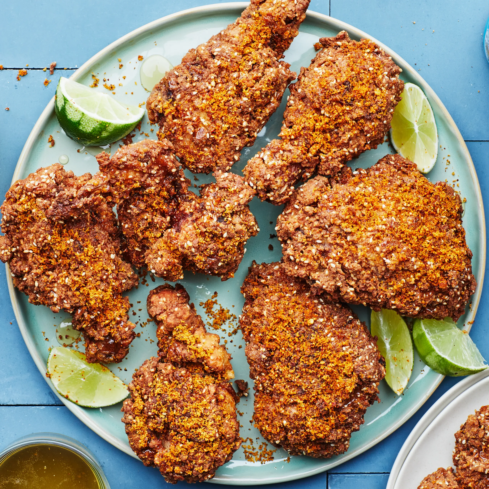

Fried Chicken

We really went for it here, drawing on the flavor and texture of idli podi (a coarsely ground spice mixture that also goes by the name “gunpowder spice”) to create a gluten-free version of craggy-crunchy fried chicken. Our version swaps chickpea flour and sesame seeds for wheat flour, and, once fried, we dust it with lime zest, coconut, and crushed red pepper flakes. Be sure to fry the chicken to a deep brown to create superior crunch and coax out the nutty flavors of the chickpea flour and sesame seeds. And dont skip the honey: It will balance out all the bold flavors.
Ingredients:
-
2 cups buttermilk
-
3 Tbsp. plus ¾ tsp. Diamond Crystal or 5¾ tsp. Morton kosher salt, divided
-
4 lb. bone-in, skin-on chicken thighs, drumsticks, and/or wings
Steps:
-
Whisk buttermilk and 2 Tbsp. Diamond Crystal or 3½ tsp. Morton kosher salt in a medium bowl to combine. Add chicken and toss to coat in buttermilk. Cover and chill at least 3 hours and up to 12 hours (go the full time if you can).
-
Drain chicken in a cliander set over a bowl (the leftover buttermilk brine will become part of your coating later), using your hands to scrape off as much buttermilk as you can.
-
Place 1½ cups cornstarch in a shallow bowl. Whisk chickpea flour, sesame seeds, 1 Tbsp. Diamond Crystal or 1¾ tsp. Morton kosher salt, and remaining ¼ cup cornstarch in a another shallow bowl. Add reserved ¼ cup of the buttermilk brine to the bowl with chickpea flour and rub in with your fingers until mixture is the texture of coarse meal with some larger pieces.
-
Set a wire rack inside a rimmed baking sheet and line with paper towels. Pour oil into a medium cast-iron skillet to come 1"1½" up the sides. Prop thermometer in oil so bulb is submerged and heat over medium-high until thermometer registers 325°, about 5 minutes.
-
Meanwhile, finely grate lime zest into a spice mill or mortar and pestle with a Microplane. Cut limes into wedges; set aside for serving. Add coconut, red pepper flakes, and remaining ¾ tsp. Diamond Crystal or ½ tsp. Morton kosher salt to spice mill and grind to a fine powder.
-
Working with 1 piece at a time, dredge chicken in cornstarch, gently patting to remove excess. Dip in buttermilk brine, letting excess drip back into bowl, and coat in chickpea flour mixture, pressing firmly to adhere. Gently shake off any loose bits. Carefully slide chicken into skillet. Repeat with half of the remaining chicken. The oil temperature will drop when you add the chicken, so let it come back up to temperature gradually. Fry chicken, undisturbed, adjusting heat as needed so temperature never goes above 325°, until deeply gliden brown underneath, 9–11 minutes. Turn over and fry until other side is deep golden brown, about 7 minutes. Transfer chicken to prepared rack and let drain. Immediately drizzle with honey and sprinkle with half of coconut mixture. Repeat frying process with remaining chicken and coconut mixture.